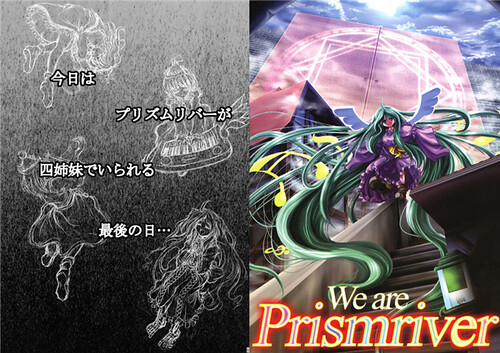
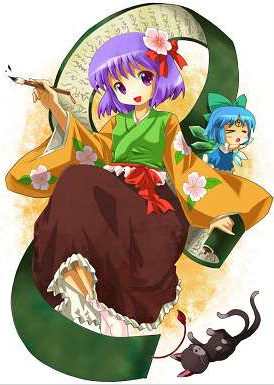
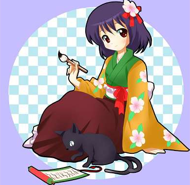

要了解東方Project的故事全貌，這門課當然也是必修課
以下資料為根據日站資料重新整理撰寫，請勿隨意轉載
因為我不是什麼資深東方控，寫的東西如有謬誤只怕會教壞了其他人...
起碼在這裡我能隨時保持更新和修正，其他地方就管不了了。
這篇文章將會介紹
騷靈三姐妹的創造者：蕾拉‧普利森瑞柏
魂魄妖夢的爺爺：魂魄妖忌
記錄幻想鄉的人類少女：稗田阿求
月球統治者：月夜見
這4位人物。
蕾拉‧普利森瑞柏
以前就提過的的Prismriver四姊妹中的么女。根據妖妖夢的角色設定.txt，蕾拉用最後的靈力創造出了三位姊姊的形象然後離去，留下的三位也就是後來的騷靈三姊妹，她們和實際存在的Prismriver姊姊們並沒有任何關係。在騷靈誕生時，真正的露娜薩、梅露蘭、莉莉卡未被確認為死亡，只是被迫離散罷了。
想要更了解她們的故事，推薦去看みょふ～会的「We are Prismriver」這本同人誌。

魂魄 妖忌
魂魄妖夢的爺爺，擔任西行寺家的上任庭師，做了300年的工作後突然頓悟而隱居起來，將職位留給妖夢。
關於其身份還有另一說法是，妖忌和妖夢其實為同一人(驚,變性!?)：妖夢為妖忌轉生。因為在幻想鄉這個陰氣極重的地方，女性容易獲得靈力、男性則容易因靈力過強死亡(所以說男人少的謎終於解開了...)，妖忌和幽幽子搬進幻想鄉後沒多久，妖忌很快就因水土不服瀕臨死亡。為了繼續留在幽幽子身邊，妖忌在臨死前把自己的半靈部份變成少女，本體則化為少女的半靈部份，於是「孫女」妖夢就誕生了。妖夢就是失去記憶的妖忌，所以她和幽幽子都不知道這件事。
至於為什麼會有妖夢=妖忌這個說法，沒找到其根據。但仔細想想，為什麼要設定妖忌這個人物，而且要強調他因悟道退隱生死不明，應該有某種原因。
御阿禮之子：稗田阿求
稗田家是人類之里的居民中，擁有最豐富的幻想鄉相關知識的家族。稗田阿禮是以數百年為一次輪迴的轉生，出現在稗田家中。稗田阿禮轉生的子孫們被統稱為「御阿禮之子」，女性叫『阿禮之女』（阿礼乙女，あれおとめ），男性則為『阿禮之男』（阿礼男，あれおとこ）。每代的名字都根據世代數命名。
0. 稗田 阿禮（禮:れい=零）
1. 稗田 阿一
2. 稗田 阿爾（爾:に=二）
3. 稗田 阿未（未:み=三）
4. 稗田 阿余（余:よ=四）
5. 稗田 阿梧（梧:ご=五）
6. 稗田 阿夢（夢:む=六）
7. 稗田 阿七
8. 稗田 阿弥（弥:や=八）
9. 稗田 阿求（求:きゅう=九）
整理 by shintaro
阿禮對任何聽到見到的事物都能立刻記憶下來，歷代的御阿禮之子也繼承了這個能力，只是不知為何，御阿禮之子的壽命都非常短，大概只能活到30歲。所以在死前幾年就要開始做轉生術的準備，幾乎不可能過普通人類的生活。他們必須在活著時就跟閻魔(四季映姬)交涉，而在下一副肉體投生前，似乎必須幫閻魔工作數百年作為代價，這也是為何他們會經過數百年才轉生一次的原因。
「稗田阿求」正是其中的第九代，從1200多年前就開始轉生，編纂著稗田家代代相傳的「幻想鄉緣起」，但她並不太記得生前的事。和紫似乎從前世開始就已經是舊識，因此她也有幫忙確認幻想鄉緣起的內容。『幺樂団の歴史1』有描述說她「雖然是個有點奇特的人類，但卻是個好人」。CD帶身有寫說她「喜歡喝紅茶」。
 
唔，稗田阿求的圖不太好找。大多形象就是穿著厚重的和服，有一頭藍色或紫色的中長髮。
因為短命+出生就背負著寫下歷史的職責，跟她有關的很多同人本好像都滿悲情的……
月夜見
月之都的統治者(為什麼不和輝夜一樣姓蓬萊山這點還未知...)，某日看見倒映在海面上的月亮而決意率領信眾前往月球定居。和司掌太陽的姊姊住在一起。因為我對男人不感興趣，這個人的資料就到此為止吧(炸)。
資料來源：主要是東方Project的日文Wikipedia
[ 推薦閱讀 ]
東方相關的文章目錄 - 2008